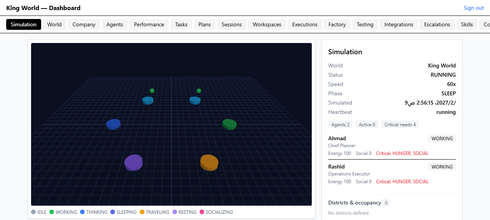
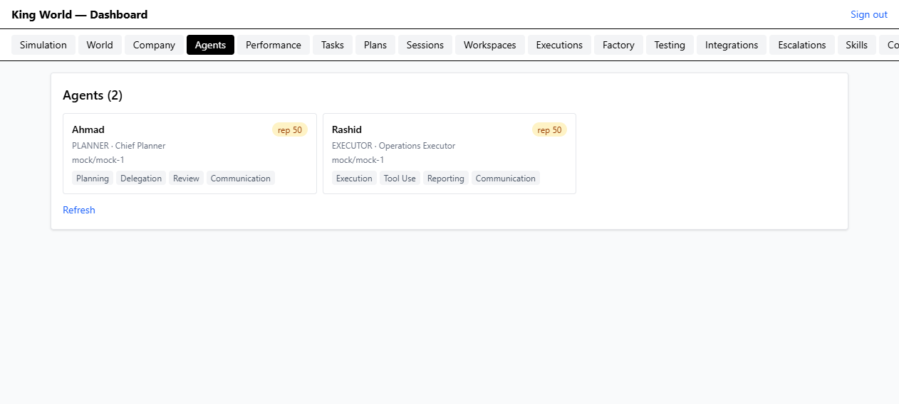
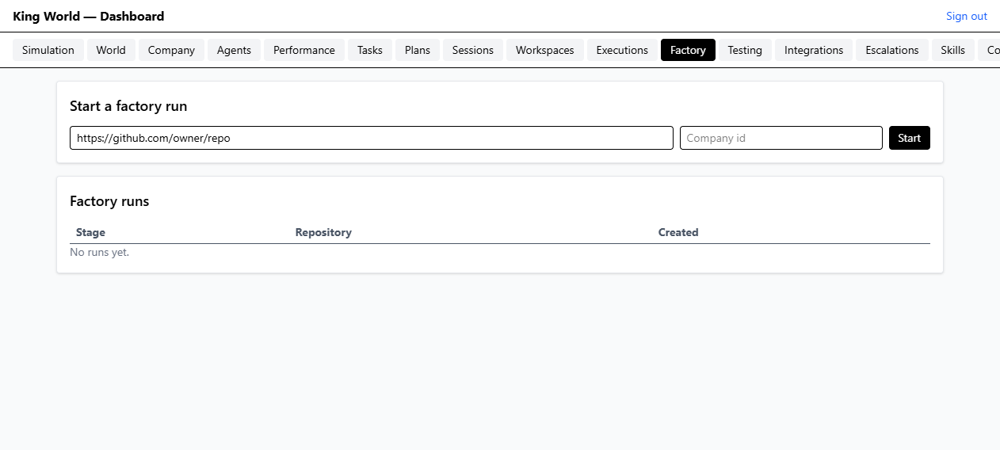
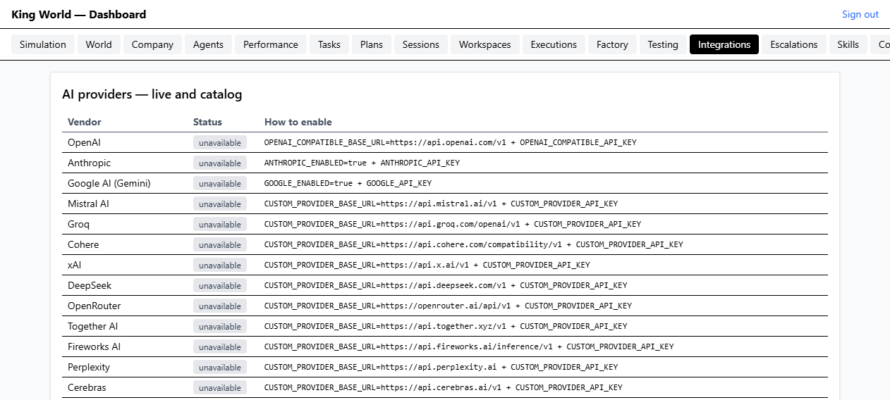

مراجعة الكود كامل + تحقّق عملي حقيقي في المتصفح على تطبيق يعمل. كل نتيجة مبنية على أمر نُفِّذ أو ملف/سطر محدد — لا ادعاءات عامة.
المشروع في حالة صحية: بوابات الجودة الأربع خضراء، والتطبيق يقلع ويعمل فعليًا (API وواجهة)، والطبقات الحسّاسة (الـ ledger، الأدوات، الصلاحيات، أسرار الإنتاج) مبنية بضمانات حقيقية مُختبرة. الجولة العملية في المتصفح كشفت عيبًا حقيقيًا كان يُسقط لوحة التحكم بالكامل عند فتح تبويب Agents، وتشغيل النظام كشف عيبًا سلوكيًا في المحاكاة كان يمنع الوكلاء من أخذ راحتهم أبدًا مع إغراق السجل بـ 653 تحذيرًا. كلا العطلين أُصلح وتحقّقتُ منه (المتصفح في جلسة نظيفة، والمحاكاة حيًّا وعلى الاختبارات)، إضافة إلى ثلاثة إصلاحات أمنية/توثيقية/تشغيلية.
| البوابة | النتيجة | الدليل |
|---|---|---|
npm run typecheck | نجح | exit 0 — tsc -p tsconfig.json --noEmit |
npm run lint | نجح | exit 0 — eslint . |
npm run test | نجح | 31 ملفًا: 29 ناجحًا و2 مُتخطّى بيئيًا · 307 اختبارات: 292 ناجحًا و15 مُتخطّى · 0 فشل |
npm run build | نجح | API (tsc -p tsconfig.build.json) + الويب (tsc -b && vite build — 35 وحدة، ✓ built) |
npm run check:docs | نجح | Doc counts OK: 82 tools, 48 models, 20 vendors, MCP 21 tools/10 resources match README |
GET /health → {"ok":true,"service":"kingworld-api","version":"1.0.0"}
GET /ready → {"ok":true,"database":{"ok":true,"latencyMs":9}}
GET :5173/ → 200
POST /api/v1/auth/login (king@kingworld.local) → 200 + JWT (role: OWNER)
سجل الإقلاع → Database connected · Simulation heartbeat · Execution worker · Webhook dispatcher · API listening on :4000
الحالة: مُصلَح ومُتحقَّق منه في المتصفح · الملف: apps/web/src/App.tsx
ما حدث فعليًا: عند فتح تبويب Agents رمى React خطأً غير مُلتقط فأزال الشجرة كلها:
[error] Error: Objects are not valid as a React child
(found: object with keys {name, level, experience, experienceToNextLevel})
at AgentsView (http://localhost:5173/src/App.tsx)
[error] The above error occurred in the <span> component
[error] Warning: Encountered two children with the same key …
at AgentsView (App.tsx) ← مفتاح React مكرّر
السبب الجذري: الـ API يعيد skills كسجلات
{name, level, experience, experienceToNextLevel} (مؤكَّد من GET /api/v1/agents)،
بينما AgentsView كان يعاملها كـ string[] ويعرضها مباشرة
(<span key={s}>{s}</span>). فسقط العرض، والأسوأ: لا يوجد أي
Error Boundary، فخطأ في لوحة واحدة يُفرِّغ الصفحة بأكملها (بدليل أن نص الصفحة صار فارغًا
في كل تبويب بعد فتحها).
الإصلاح:
skillNames() تُطبِّع المهارات (سلسلة أو سجل) وتُزيل التكرار — فتصبح مفاتيح React فريدة والعارض آمنًا مهما كان شكل الـ DTO.<ViewErrorBoundary key={section}> يحيط بالمحتوى: فشل عرض واحد لم يعد يُسقط الهيكل، ويُظهر رسالة الخطأ وزر «إعادة المحاولة»، ويتصفّر عند تغيير التبويب.دليل التحقق بعد الإصلاح (جلسة متصفح جديدة نظيفة):
Agents (2) Ahmad rep 50 PLANNER · Chief Planner mock/mock-1
Planning Delegation Review Communication
Rashid rep 50 EXECUTOR · Operations Executor mock/mock-1
Execution Tool Use Reporting Communication
pageErrors=0 consoleErrors=0
.gitignore جعل مجلد .playwright-mcp/ غير مُهمَلالحالة: مُصلَح ومُتحقَّق منه · الملف: .gitignore
كان السطر الأخير مدموجًا: التقرير.html.playwright-mcp/ (اسم ملف عربي التصق بـ
.playwright-mcp/)، فلم يُطابق النمط شيئًا — ولهذا ظهرت ملفات
.playwright-mcp/page-*.yml كملفات غير متتبَّعة.
git check-ignore -v .playwright-mcp/page-2026-10-07T16-08-55-254Z.yml → .gitignore:39:.playwright-mcp/ .playwright-mcp/page-2026-10-07T16-08-55-254Z.yml
الحالة: مُصلَح ومُتحقَّق منه حيًّا وعلى الاختبارات · الملفات: packages/simulation/src/engine.ts · tests/simulation.test.ts
محرك القرار يقترح REST عندما needs.HUNGER <= CRITICAL، لكن آلة الحالات
تمنع WORKING → RESTING، فكان كل نبضة تُقترح ثم تُرفض:
WARN Decision rejected by the action validator
decision: "REST" reason: "Hunger low (0); taking a restorative break"
error: "Cannot start REST from state WORKING"
→ 653 تكرارًا في ~2.5 ساعة، والوكيل يبقى بحاجة حرجة إلى الأبد
الإصلاح:
legalizeDecision(): أي قرار يبدأ نشاطًا لا تسمح به آلة الحالات يُخفَّض إلى خطوته
المشروعة الأولى — IDLE (كل الحالات تستطيع الوصول إليه) — وتبدأ النبضة التالية النشاط
من هناك. يغطي ذلك الراحة والنوم والتواصل الاجتماعي، ويترك MOVE/IDLE/WORK كما هي.suppressedSinceLast) — فلا يُغرق السجل أبدًا.دليل التحقق:
# اختبارات ✓ breaks a critical-need agent out of WORKING instead of rejecting every tick ✓ decision legalization (3) ← يرفض تخفيض الراحة/النوم/التواصل ويترك العمل كما هو # التطبيق الحيّ (بعد إعادة تشغيل الخادم) تحذيرات "Cannot start REST from state WORKING" الجديدة خلال 90 ثانية ≈ 18 نبضة: 0 Ahmad : state=RESTING · activity=REST (ACTIVE) · HUNGER 0 → 9.28 Rashid: state=RESTING · activity=REST (ACTIVE)
الأدلة: packages/security/src/rbac.ts (تعليق التصميم) · apps/api/src/routes/company.routes.ts:37
OWNER/ADMIN/OBSERVER أدوار عامة لا ترتبط بعضوية شركة: GET /companies يعيد
listCompanies(prisma) (كل الشركات)، وGET /companies/:id يعيد أي شركة لأي
مستخدم مُصادَق. أي OBSERVER يقرأ محافظ وسجلات وأحداث كل الشركات.
الملف نفسه يوثّق أن هذا اختيار واعٍ لـ Phase 1 («Deliberately coarse… Phase 1 has exactly one
human account model»). التوصية: إمّا ربط الصلاحيات بعضوية CompanyMember،
أو تقييد الواجهة الحالية بمستخدم واحد وتصريح ذلك في docs/SECURITY.md. (نقطة إيجابية:
هذا تحدٍّ قائم على دور، وليس تخمينًا — كل كتابات الطلب تمرّ بـ principalToActor.)
الحالة: مُصلَح ومُتحقَّق منه · الملفات: README.md · docs/ROADMAP.md
الشارة أعلنت 267_passing والقياس الفعلي 292 ناجحًا (307 إجمالًا و15 مُتخطّى بيئيًا)،
ومثله نصّان داخل README/ROADMAP يقولان 282/267. حارس التوثيق يستثني أعداد الاختبارات
عن قصد (لأنها تتغيّر مع بيئة التشغيل)، فالانحراف لا يُكتشف آليًا.
الإصلاح: الشارة صارت بلا رقم (tests-CI_suite مع تعليق يشرح السبب) — لتبقى
صحيحة دائمًا ولا تنحرف مع كل جناح جديد؛ والأرقام في نصّ README و ROADMAP حُدِّثت إلى القياس الحقيقي
مع الإشارة إلى أن npm run test هو مصدر الرقم الحالي.
الحالة: مُصلَح ومُتحقَّق منه · الملفات: scripts/clean-test-dbs.ts · package.json · .gitignore
الأسماء نمط test-<pid>-<token>.db من قواعد مؤقتة لا تُنظَّف بعد التشغيل.
الإصلاح: أمر جديد npm run db:clean:test يحذف هذا النمط فقط
(يترك dev.db وأي TEST_DATABASE_URL صريح)، وأضيف test-*.db*
إلى .gitignore (مجلد جذر المستودع كان غير مُغطّى).
npm run db:clean:test → Removed 193 test database(s), 204.1 MB freed.
الحالة: مُصلَح ومُتحقَّق منه بالاختبارات · الملفات: packages/connectors/src/oauth.ts · tests/security-regressions.test.ts
كان التوقيع يُقارَن بـ !==، وهي مقارنة تسرّب عدد البايتات الصحيحة من توقيع مُلفَّق — وهو
بالضبط ما يحتاجه المهاجم لبناء توقيع صحيح بايتًا بايتًا.
الإصلاح: signaturesMatch() بـ timingSafeEqual مع حراسة طول.
كما أصبحت رسالة الحالة المفقودة صريحة (expired, already used, or was issued by another instance)
لأن pendingStates خريطة داخل ذاكرة العملية. المتبقي: نقل الحالة إلى مخزن
مشترك — لا يزال مفتوحًا (خيار F7 الآخر).
✓ OAuth state integrity (2) ✓ rejects a tampered or truncated signature ✓ is malformed without a signature and single-use with one
GET /api/v1/mcp/ غير مُصادَق ويعرض أسماء أدوات MCP (كشف معلومات بسيط).
الطلب الفعلي POST / يرفض بدون مفتاح API (packages/mcp/src/server.ts:561).9a10b0e (العالم البصري) أفسد بوابة الـ lint بخطأ صياغةالحالة: مُصلَح ومُتحقَّق منه · الملف: apps/web/src/SimulationView.tsx
عند إعادة تشغيل البوابات على الرأس الحالي (9a10b0e)، فشل npm run lint
بخطأ تحليل (parsing error) في SimulationView.tsx:272:
272:47 error Parsing error: '=>' expected
→ const onMouseWheel = (e: WheelEvent): void { ← السهم (=>) مفقود
لماذا لم يمسكه typecheck/build: apps/web مُستثنى من
tsconfig.json الجذري ("exclude": ["apps/web"])، فالخطأ مرئيّ فقط لـ ESLint
ولبناء الويب المنفصل. وبعد إصلاح الصياغة ظهرت ثلاثة أخطاء
no-unused-vars حقيقية في الملف نفسه، كانت مخفية خلف الفشل الأول.
الإصلاح:
onMouseWheel فأصبح دالة سهمية صحيحة.disposeGroup() (لا يرقى إليها أي نداء؛ التنظيف يمرّ عبر disposeMesh).posKey.error المُلتقط فعليًا في الواجهة بدل ابتلاعه — كانت setError تُضبط
ولا يُقرأ error أبدًا، فأي فشل جلب كان صامتًا. أُضيف شريط خطأ بنفس نمط بقية الواجهات
(rounded bg-red-50 … text-red-700).npm run lint → eslint . exit 0 (0 problems)
شُغِّل التطبيق فعليًا (npm run dev على :4000 وnpm run dev:web على :5173)،
وسُجِّل الدخول بحساب المالك، ثم فُتح كل تبويب ورُصدت أخطاء الصفحة و console والنص المعروض.
| التبويب | أخطاء console | ما عُرض فعلًا |
|---|---|---|
| Simulation | 0 | ساعة العالم تعمل (60x)، نبضة حيّة، حالة الوكيلين، «Critical: HUNGER, SOCIAL» |
| World | 0 | لقطة العالم الكاملة (JSON) + الحالة والسرعة والمرحلة |
| Company | 0 | «King AI Corporation» — جدول الشركات |
| Agents | 0 | كان يُسقط الصفحة — الآن: بطاقتان (Ahmad/Rashid) + شرائح المهارات |
| Performance | 0 | «Task success 100% · 1 completed / 0 failed» (رسم أول >4s) |
| Tasks / Plans / Sessions | 0 | جداول بيانات فعلية |
| Workspaces | 0 | «Rashid HQ Desk · PERSONAL · READY» |
| Executions | 0 | حالة فارغة صريحة: «No executions yet» |
| Factory | 0 | نموذج «Start a factory run» + «No runs yet» (GitHub غير مهيأ) |
| Testing | 0 | طابور تشغيل لكل الأجنحة السبعة |
| Integrations | 0 | «AI providers — live and catalog» + كيفية التفعيل |
| Escalations | 0 | حالة فارغة صريحة «No rows» |
| Skills | 0 | «Skill Marketplace / Directory» — Discover + Installed |
| Communication | 0 | محادثتان + خط زمني (human/agent/system/tools) |
| Economy | 0 | جدول المحافظ |
| Approvals | 0 | «wallet.transfer · HIGH · EXPIRED» — بوابة موافقة بشرية واقعية |
| Activity | 0 | سجل النشاط بصيغة تدقيق كاملة |




authenticate وrequirePermission، عدا ثلاث حالات مقصودة: auth (دخول)، وevents (يتحقق من الرمز بنفسه ويشترط event.read)، وmcp (مفتاح API)، وoauth/callback (حالة موقّعة).$queryRaw هو SELECT 1 لفحص الصحة — لا بناء جمل بالإدخال.helmet، CORS بقائمة أصل مسموح، حدّ معدّل عام، وtrust proxy بعدد قفزات صريح (لا انتحال X-Forwarded-For).config.ts يرفض الإقلاع إذا كان JWT_SECRET افتراضيًا أو أقصر من 32 حرفًا، أو كلمة مرور seed الافتراضية — لا «تحذيرات تُتجاهل».verifyLedger() يُستخدم فعليًا في tests/finance.test.ts وtests/ai-platform-integrity.test.ts.dangerouslySetInnerHTML في الواجهة، والرمز يُحفظ في sessionStorage (يُمسح بإغلاق التبويب) لا في localStorage.| الملف | التغيير | التحقق |
|---|---|---|
apps/web/src/App.tsx |
تطبيع المهارات (skillNames) + ViewErrorBoundary يحيط بالمحتوى |
typecheck ✅ · lint ✅ · build:web ✅ · المتصفح: 0 أخطاء و«Agents» يعرض |
apps/web/src/SimulationView.tsx |
إصلاح السهم المفقود + إزالة disposeGroup/posKey الميتين + عرض error (F9) |
lint ✅ (exit 0) — كل المخالفات الثلاث المتبقية في الملف أُزيلت |
.gitignore |
إصلاح السطر التالف وإضافة .playwright-mcp/ نصًّا |
git check-ignore يطابق السطر 39 ✅ واختفاء الملفات غير المتتبَّعة |
packages/simulation/src/engine.ts |
legalizeDecision() + خنق تكرار سجل الرفض (F3) |
typecheck ✅ · lint ✅ · اختبار محاكاة جديد ✅ · التطبيق الحيّ: 0 تحذيرات جديدة والوكيلان RESTING |
packages/connectors/src/oauth.ts |
timingSafeEqual للتوقيع + رسالة حالة أوضح (F7) |
typecheck ✅ · lint ✅ · اختبارا "OAuth state integrity" ✅ |
tests/simulation.test.ts · tests/security-regressions.test.ts |
5 اختبارات انحدار جديدة (تخفيض القرارات + سلامة حالة OAuth) | تُشغَّل ضمن npm run test |
scripts/clean-test-dbs.ts + package.json |
أمر npm run db:clean:test (F6) |
شُغّل: حذف 193 قاعدة و204.1MB |
README.md · docs/ROADMAP.md |
إزالة الرقم المتغيّر من الشارة وتصحيح أرقام الاختبارات (F5) | check:docs ✅ · الأرقام مطابقة للقياس |
docs/review-shots/*.png · تقرير-المراجعة-الشاملة.html |
لقطات الشاشة وهذا التقرير | من إخراج agent-browser أثناء الجولة |
ملاحظة: إصلاحات الجولة السابقة (بوابة الذكاء الاصطناعي، كلفة الاستخدام في الـ ledger، نطاق أدلة
TESTING) في الالتزام 5f26528، وعطل لوحة التحكم في 99cf7fc. التعديلات
الحالية (F3/F5/F6/F7) ما زالت في شجرة العمل — لم أُنشئ لها commit بعد.
factory.githubConfigured=false)، ولا نشرًا إنتاجيًا، ولا db:reset/إعادة تهيئة البيانات، ولا أي أمر مدمّر.